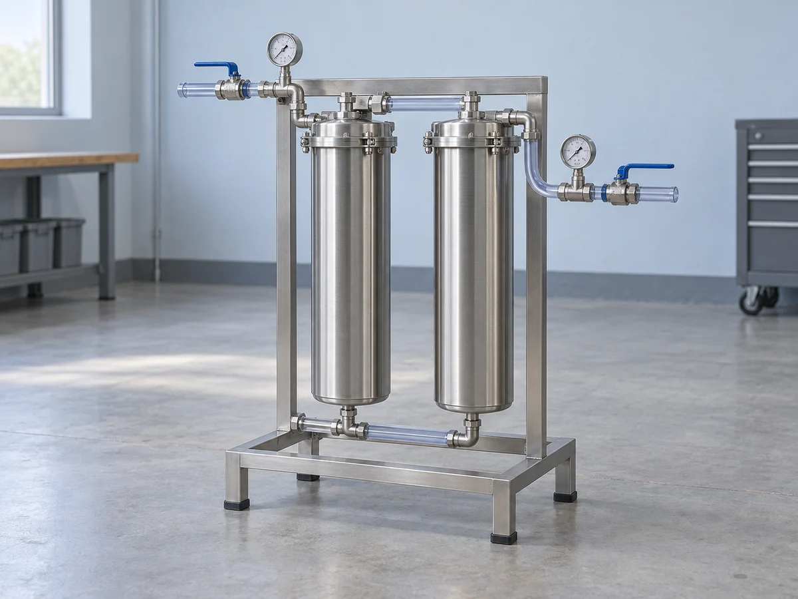
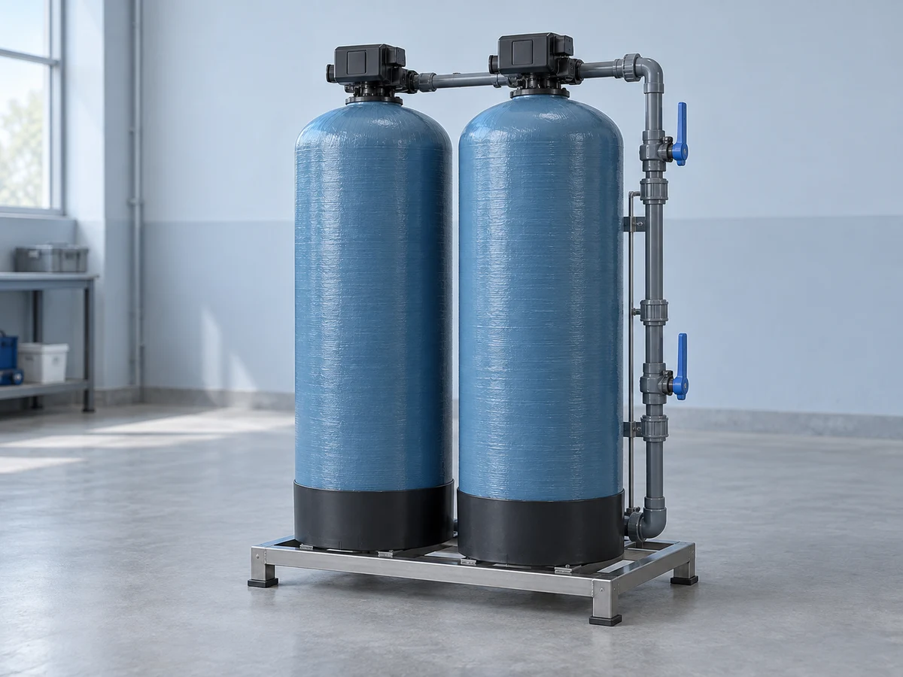

SYSTEMS & TRIALS
Different stages.
One considered system.
These three offers are starting points for a site discussion. Source evidence, intended use and operating duty determine the final scope.

Illustrative concept assembly. Model code is not a capacity rating.
SR-20 / PREFILTRATION
Sediment Rack
Make the first filtration stage accessible to the people who look after it.
A rack-mounted bag or cartridge concept for a defined non-potable process. Media choice follows a review of the source and the next stage; it is not selected from appearance alone.
- Bring to review
- Available source analysis, seasonal observations, demand records and a sketch of the plant area.
- In the scoped offer
- Housing and media selection, isolation valves, pressure gauges, sampling points and an access layout.
- Operator’s part
- Record agreed checks and arrange media changes using the selected equipment instructions.
- Boundary
- No disinfection, removal guarantee or drinking-water approval is implied by this filtration stage.

Concept equipment. Media and final configuration are project specific.
CS-40 / MEDIA STAGE
Carbon Stage
Define the objective.
Then define the media plan.
A twin-vessel concept considered only against a specific process requirement. Available analysis, upstream treatment and maintenance arrangements shape the discussion.
- Bring to review
- The agreed process objective, current analysis, upstream stages and site operating pattern.
- In the scoped offer
- Media review, vessel and manifold arrangement, sampling locations and a replacement plan.
- Operator’s part
- Keep agreed operating records and arrange media review or replacement at the defined triggers.
- Boundary
- This is not universal contaminant treatment. Suitability requires evidence; no removal performance is promised here.
Sample A→Trial
stage→Outlet
Sample B
A review process for a specified trial, not a treatment prescription.
RP-10 / TRIAL SERVICE
Reuse Pilot
Test the question before
scaling the answer.
Where the source or proposed use remains uncertain, agree a temporary trial with a written objective, sampling points and an end-of-trial review.
- Bring to review
- Source history, intended non-potable use, variability records, trial space and a responsible site contact.
- In the scoped offer
- A bounded trial plan, a selected temporary stage, upstream/downstream sampling points and a findings record.
- Operator’s part
- Follow the agreed trial operating plan and record changes. Laboratory work is arranged separately.
- Boundary
- A pilot does not authorise reuse, establish water safety or commit either party to a production installation.
What does a system cost?
We quote against an agreed site scope. Equipment, integration, commissioning and planned service are identified separately. This concept website does not publish prices or issue quotes.
What happens before a quoteA GOOD PLACE TO START
Tell us what comes in.
And what needs to come next.
Build a short preparation list for your source, site and intended use.
Prepare a source enquiry